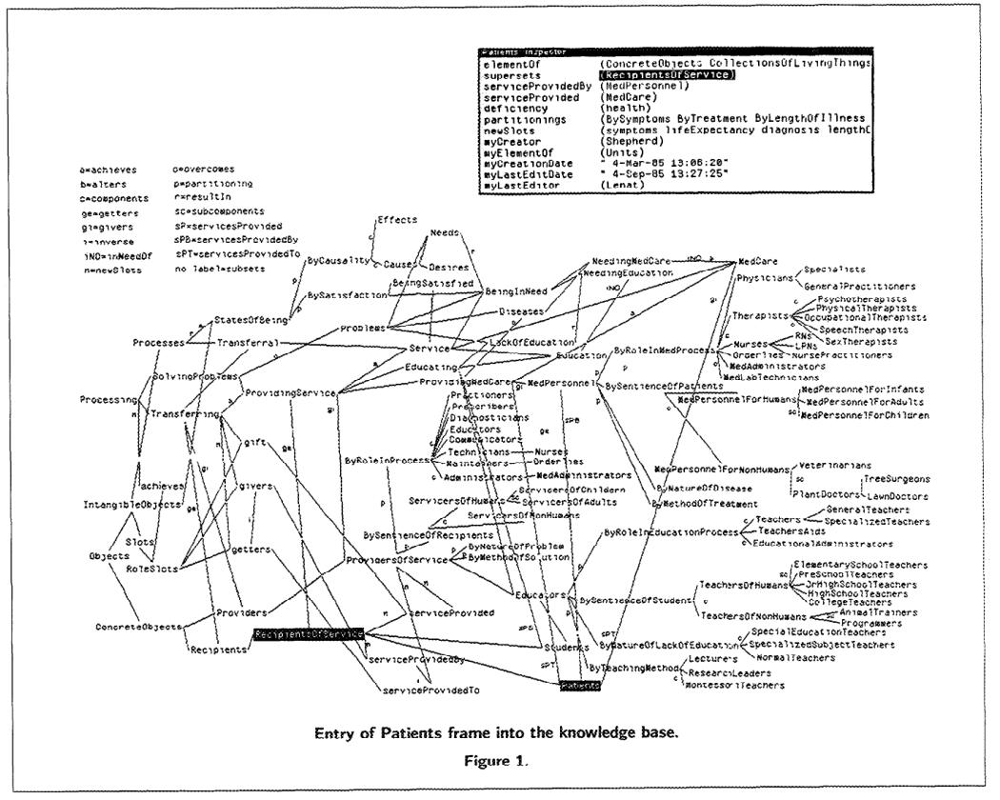
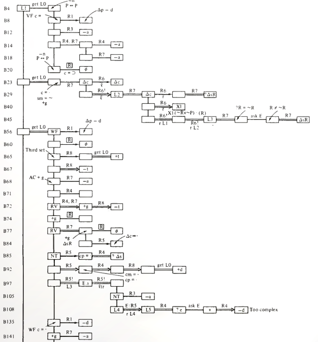
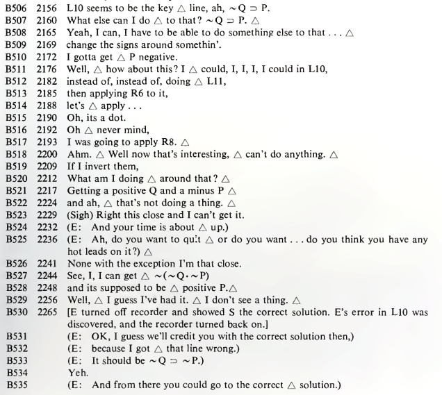

The enigma of Marvin Minsky
In an 1993 interview, Robert Hecht-Nielsen described how Minsky stood in relation with the neural network community (Rosenfeld and Anderson 2000, 303–5):
Minsky had gone to the same New York “science” high school as Frank Rosenblatt, a Cornell psychology Ph.D. whose “perceptron” neural network pattern recognition machine was receiving significant media attention. The wall-to-wall media coverage of Rosenblatt and his machine irked Minsky. One reason was that although Rosenblatt’s training was in “soft science,” his perceptron work was quite mathematical and quite sound—turf that Minsky, with his “hard science” Princeton mathematics Ph.D., didn’t feel Rosenblatt belonged on. Perhaps an even greater problem was the fact that the heart of the perceptron machine was a clever motor-driven potentiometer adaptive element that had been pioneered in the world’s first neurocomputer, the “SNARC”, which had been designed and built by Minsky several years earlier! In some ways, Minsky’s early career was like that of Darth Vader. He started out as one of the earliest pioneers in neural networks but was then turned to the dark side of the force (AI) and became the strongest and most effective foe of his original community. This view of his career history is not unknown to him. When he was invited to give the keynote address at a large neural network conference in the late 1980s to an absolutely rapt audience, he began with the words: “I am not the Devil!”
However, it appears he had changed his mind later. As recounted by Terence Sejnowski in (Sejnowski 2018, 256–58):
I was invited to attend the 2006 Dartmouth Artificial Intelligence Conference, “AI@50,” a look back at the seminal 1956 Summer Research Project on artificial intelligence held at Dartmouth and a look forward to the future of artificial intelligence. … These success stories had a common trajectory. In the past, computers were slow and only able to explore toy models with just a few parameters. But these toy models generalized poorly to real-world data. When abundant data were available and computers were much faster, it became possible to create more complex statistical models and to extract more features and relationships between the features.
In his summary talk at the end of the conference [The AI@50 conference (2006)], Marvin Minsky started out by saying how disappointed he was both by the talks and by where AI was going. He explained why: “You’re not working on the problem of general intelligence. You’re just working on applications.” …
There was a banquet on the last day of AI@50. At the end of the dinner, the five returning members of the 1956 Dartmouth Summer Research Project on Artificial Intelligence made brief remarks about the conference and the future of AI. In the question and answer period, I stood up and, turning to Minsky, said: “There is a belief in the neural network community that you are the devil who was responsible for the neural network winter in the 1970s. Are you the devil?” Minsky launched into a tirade about how we didn’t understand the mathematical limitations of our networks. I interrupted him—“Dr. Minsky, I asked you a yes or no question. Are you, or are you not, the devil?” He hesitated for a moment, then shouted out, “Yes, I am the devil!”
What are we to make of the enigma of Minsky? Was he the devil, or was he not the devil?
The intellectual history of Minsky
During his undergrad years, Minsky was deeply impressed by Andrew Gleason,1 and decided to work on pure mathematics, resulting in his 1951 undergraduate thesis A Generalization of Kakutani’s Fixed-Point Theorem, which extended an obscure fixed point theorem of Kakutani – not the famous version, as Kakutani proved more than one fixed point theorems.
1 (Bernstein 1981)
I asked Gleason how he was going to solve it. Gleason said he had a plan that consisted of three steps, each of which he thought would take him three years to work out. Our conversation must have taken place in 1947, when I was a sophomore. Well, the solution took him only about five more years … Gleason made me realize for the first time that mathematics was a landscape with discernible canyons and mountain passes, and things like that. In high school, I had seen mathematics simply as a bunch of skills that were fun to master—but I had never thought of it as a journey and a universe to explore. No one else I knew at that time had that vision, either.”
Theorem 1 (Kakutani’s fixed point theorem on the sphere) If \(f\) is a \(\R^2\)-valued continuous function on the unit sphere in \(\R^3\), then for any side length \(r \in (0, \sqrt 3)\), there exists \(x_1, x_2, x_n\) on the sphere forming an equilateral triangle with side length \(r\), such that \(f(x_1) = f(x_2) = f(x_3)\).
Equivalently, if \(x_1, x_2, x_3\) form an equilateral triangle on the unit sphere, then there exists a rotation \(T\) such that \(f(T(x_1)) = f(T(x_2)) = f(T(x_3))\).
Using knot theory, Minsky proved an extension where \(x_1, x_2, x_3\) are three points of a square or a regular pentagon (M. Minsky 2011). The manuscript has “disappeared” (“Selected Publications of Marvin Minsky” n.d.).
I wrote it up and gave it to Gleason. He read it and said, ‘You are a mathematician.’ Later, I showed the proof to Freeman Dyson, at the Institute for Advanced Study, and he amazed me with a proof (Dyson 1951) that there must be at least one square that has the same temperature at all four vertices. He had found somewhere in my proof a final remnant of unused logic. (Bernstein 1981)
He then got interested in neural networks and reinforcement learning, and constructed a very simple electromechanical machine called SNARC.2 The SNARC machine is a recurrent neural network, performing reinforcement learning by Hebbian learning rule. It simulates a mouse running around a maze, and the operator watches an indicator light showing the mouse. The operator can press a button as a reward signal, and this would cause an electric motor to turn a chain. The chain is clutched to rheostats that connect the neurons, and the stretch of the clutch is proportional to the charge in a capacitor. During the operation of the neural network, the capacitor charges up if there is neural co-activation on the connection, and decays naturally, thus serving as a short-term memory. When the reward button is pressed, the clutches turn by an amount proportional to the co-activation of neural connections, thus completing the Hebbian learning.
2 It was published as (M. Minsky 1952), but the document is not available online, and I could only piece together a possible reconstruction from the fragments of information.
Minsky was impressed by how well it worked. The machine was designed to simulate one mouse, but by some kind of error it simulated multiple mice, and yet it still worked.
The rats actually interacted with one another. If one of them found a good path, the others would tend to follow it. We sort of quit science for a while to watch the machine. … In those days, even a radio set with twenty tubes tended to fail a lot. I don’t think we ever debugged our machine completely, but that didn’t matter. By having this crazy random design, it was almost sure to work, no matter how you built it. (Bernstein 1981)
This was the last we see Minsky’s work with random neural networks. He has crossed the Rubicon, away from the land of brute reason and into the land of genuine insight.
I had the naïve idea that if one could build a big enough network, with enough memory loops, it might get lucky and acquire the ability to envision things in its head. … Even today, I still get letters from young students who say, ‘Why are you people trying to program intelligence? Why don’t you try to find a way to build a nervous system that will just spontaneously create it?’ Finally, I decided that either this was a bad idea or it would take thousands or millions of neurons to make it work, and I couldn’t afford to try to build a machine like that. (Bernstein 1981)
For his PhD thesis, Minsky worked on the mathematical theory of McCulloch–Pitts neural networks. In style, it was a fine piece of classical mathematics (M. L. Minsky 1954). Minsky would go on to write (M. Minsky 1967, chap. 3), still the best introduction to McCulloch–Pitts neural networks.
Minsky’s doctoral dissertation in mathematics from Princeton in 1954 was a theoretical and experimental study of computing with neural networks. He had even built small networks from electronic parts to see how they behaved. The story I heard when I was a graduate student at Princeton in physics was that there wasn’t anyone in the Mathematics Department who was qualified to assess his dissertation, so they sent it to the mathematicians at the Institute for Advanced Study in Princeton who, it was said, talked to God. The reply that came back was, “If this isn’t mathematics today, someday it will be,” which was good enough to earn Minsky his PhD.(Sejnowski 2018, 259)
Reading the story, I was reminded of the hacker koan about Minsky and his student Sussman:
In the days when Sussman was a novice, Minsky once came to him as he sat hacking at the PDP-6. “What are you doing?”, asked Minsky. “I am training a randomly wired neural net to play Tic-Tac-Toe” Sussman replied. “Why is the net wired randomly?”, asked Minsky. “I do not want it to have any preconceptions of how to play”, Sussman said. Minsky then shut his eyes. “Why do you close your eyes?”, Sussman asked his teacher. “So that the room will be empty.” At that moment, Sussman was enlightened.
This is based on a true story. (Levy 2010, 110–11):
… Sussman told Minsky that he was using a certain randomizing technique in his program because he didn’t want the machine to have any preconceived notions. Minsky said, “Well, it has them, it’s just that you don’t know what they are.” It was the most profound thing Gerry Sussman had ever heard. And Minsky continued, telling him that the world is built a certain way, and the most important thing we can do with the world is avoid randomness, and figure out ways by which things can be planned.
As for Sussman, I knew him for two things: writing the SICP book, and being the coordinator of the infamous summer vision project that was to construct “a significant part of a visual system” in a single summer, using only undergraduate student researchers. A brief read of his “reading list” shows where his loyalties lie: firmly in the school of neats.
(Sejnowski 2018, 28) recounts the background of the summer vision project:
In the 1960s, the MIT AI Lab received a large grant from a military research agency to build a robot that could play Ping-Pong. I once heard a story that the principal investigator forgot to ask for money in the grant proposal to build a vision system for the robot, so he assigned the problem to a graduate student as a summer project. I once asked Marvin Minsky whether the story was true. He snapped back that I had it wrong: “We assigned the problem to undergraduate students.”
During the 1960s, Minsky became collaborators with Seymour Papert, resulting in the fateful book of Perceptron, and some other projects. After rejecting neural networks, Minsky became a leading researcher in AI. His style of AI is typically described as “symbolic AI”, although a more accurate description would be The Society of Mind (SoM). Minsky developed the SoM in the 1960s and 1970s with Papert, inspired by their difficulty with building robots, and published the definitive account in (M. Minsky 1988). The SoM thesis states that “any brain, machine, or other thing that has a mind must be composed of smaller things that cannot think at all”. Stated in this way, it seems patently compatible with neural networks.
The SoM thesis resembles neural networks, but only on the surface, as Minsky described concretely how he expects a society of mind should work, based on his attempts at making Builder, a robot that can play with blocks:
Both my collaborator, Seymour Papert, and I had long desired to combine a mechanical hand, a television eye, and a computer into a robot that could build with children’s building-blocks. It took several years for us and our students to develop Move, See, Grasp, and hundreds of other little programs we needed to make a working Builder-agency. I like to think that this project gave us glimpses of what happens inside certain parts of children’s minds when they learn to “play” with simple toys. The project left us wondering if even a thousand microskills would be enough to enable a child to fill a pail with sand. It was this body of experience, more than anything we’d learned about psychology, that led us to many ideas about societies of mind.
To do those first experiments, we had to build a mechanical Hand, equipped with sensors for pressure and touch at its fingertips. Then we had to interface a television camera with our computer and write programs with which that Eye could discern the edges of the building-blocks. It also had to recognize the Hand itself. When those programs didn’t work so well, we added more programs that used the fingers’ feeling-sense to verify that things were where they visually seemed to be. Yet other programs were needed to enable the computer to move the Hand from place to place while using the Eye to see that there was nothing in its way. We also had to write higher-level programs that the robot could use for planning what to do—and still more programs to make sure that those plans were actually carried out. To make this all work reliably, we needed programs to verify at every step (again by using Eye and Hand) that what had been planned inside the mind did actually take place outside—or else to correct the mistakes that occurred. … Thousands and, perhaps, millions of little processes must be involved in how we anticipate, imagine, plan, predict, and prevent—and yet all this proceeds so automatically that we regard it as “ordinary common sense.”

From the concrete description, as well as the many attractive illustrations in the book, it is clear that Minsky intended the “society of mind” to be a uniform computing substrate (silicon or carbon) upon which millions of little symbolic programs are running, each capable of running some specific task, each describable by a distinct and small piece of symbolic program. They cannot be mere perceptrons in a uniform block of neural network, or mere logic gates in a uniform block of CPU. Perhaps a modern reincarnation of such an idea would be the dream of Internet agents operating in a digital economy, populated by agents performing simple tasks like spam filtering, listening for the price of petroleum. Some agents would interface with reality, while others interface with agents. Some agents are organized on a higher level into DAOs, made by a small committee of simple “manager agents” as the interface and coordinator of other agents. DAOs can interface with other DAOs by little speaker-agents, who are themselves composed of a simple text filter for the torrent of information, which they then outsource to text-weaving agents to compose the actual messages that they would send out.
Seymour Papert
Seymour Papert, the long-time collaborator of Minsky, was the second author of Perceptron. To unlock the enigma of Minsky, we must look into Papert’s past as well.
In 1958, after a doctorate in mathematics, he met Jean Piaget and became his pupil for four years. This had a formative effect on Papert. Piaget was and an important influence on the constructivism school in education. Papert would go on to make serious work in applying constructivism to actual education. For Papert, computers realize the dream of unlocking the kaleidoscopic variety of possible constructions.
Jean Piaget studied how children develop their understanding of the world. What goes on in their mind as they progressively understand that things fall down, what dogs are, and solid steel sinks but hollow steel might float? Piaget discovered that children did not simply start with a blank sheet of paper and gradually fill in sketchy details of the true model, instead they constructed naive models of small aspects the world that, as it encounters phenomena it cannot explain, would be modified or completely replaced. In this way, Piaget claimed that children are “little scientists”.
A small example would illustrate the idea. For example, when children see that leaves fall on the water and floats, but a stone sinks, so they might add a rule that “Soft things float, while hard things sink.” Then they see that a hard plastic boat floats too, so they might add a rule that “Except hard and light things also float.” Then they see that a large boat also float, so they rewrite the entire model to “Flat-bottomed things float, while small-bottomed things sink.” And so on.
There are conservative and radical ways of using Piaget’s research for pedagogy. The conservative way is to study how children tend to construct their scientific theories, and discover a sequence of evidences to present to the little scientists so that they reach the scientific orthodoxy as fast as possible. For example, we might present children with videos of curling and air hockey, and then let them play with an air hockey table, then guide them through exercises, so that they arrive as quickly as possible at the Newton’s laws of motion.
The radical way is to decenter the orthodoxy and let a thousand heterodoxies bloom. Why go for the orthodoxy, when the Duhem–Quine thesis tells us that evidence is never enough to constrain us to only one orthodoxy? And given that objectively no theory deserves the name of “orthodoxy”, how come the scientific “orthodoxy” became dominant? A critical analysis of the history shows that its dominance over aboriginal and woman ways of knowing is merely a historical accident due to an alliance with the hegemonic reason of the center over the periphery.
Papert went with the radical way.
After four years of study under Piaget, he arrived in MIT in 1963, and began working with Minsky on various topics, including the Logo Turtle robot, and the Perceptron book. The computer revolution was starting, and Papert saw computers as a way to bring radical constructivism to children.
In the real world, phenomena are limited by nature, and aspiring little heterodoxy-builders are limited by their ability to construct theories and checking their consequences. In the computer world, every children could program and construct “microworlds” from their own theories. Thus, computers would bring constructivism to the classroom. Furthermore, the constructed world inside computers could then flow out to the physical world via robots. This is why Papert worked on both Logo the programming language and Logo the turtle robots. In his words, he intended to fight “instructionism” with “constructionism” by bringing the power of computers to every child, so that they would grow up to be “bricoleurs”, working with whatever little tool they have available doing whatever is necessary to accomplish little things. This is a vital piece in his overarching project of epistemological pluralism, to liberate heterodoxical ways of knowing (Papert 1994, chap. 7):
Traditional education codifies what it thinks citizens need to know and sets out to feed children this “fish.” Constructionism is built on the assumption that children will do best by finding (“fishing”) for themselves the specific knowledge they need … it is as well to have good fishing lines, which is why we need computers, and to know the location of rich waters, which is why we need to develop a large range of mathetically rich activities or “microworlds.”
… School math, like the ideology, though not necessarily the practice, of modern science, is based on the ideal of generality – the single, universally correct method that will work for all problems and for all people. Bricolage is a metaphor for the ways of che old-fashioned traveling tinker, the jack-of-all-trades who knocks on the door offering to fix whatever is broken. Faced with a job, the tinker rummages in his bag of assorted tools to find one that will fit the problem at hand and, if one tool does nor work for the job, simply tries another without ever being upset in the slightest by the lack of generality. The basic tenets of bricolage as a methodology for intellectual activity are: Use what you’ve got, improvise, make do. And for the true bricoleur, the tools in the bag will have been selected over a long time by a process determined by more than pragmatic utility. These mental tools will be as well worn and comfortable as the physical tools of the traveling tinker; they will give a sense of the familiar, of being at ease with oneself …
Kitchen math provides a clear demonstration of bricolage in its seamless connection with a surrounding ongoing activity that provides the tinker’s bag of tricks and tools. The opposite of bricolage would be to leave the “cooking microworld” for a “math world,” to work the fractions problem using a calculator or, more likely in this case, mental arithmetic. But the practitioner of kitchen math, as a good bricoleur, does not stop cooking and turn to math; on the contrary, the mathematical manipulations of ingredients would be indistinguishable to an outside observer from the culinary manipulations.
… The traditional epistemology is based on the proposition, so closely linked to the medium of text-written and especially printed. Bricolage and concrete thinking always existed but were marginalized in scholarly contexts by the privileged position of text. As we move into the computer age and new and more dynamic media emerge, this will change.
According to Papert, his project is epistemological pluralism, or promoting different ways of knowing (Turkle and Papert 1990):
The diversity of approaches to programming suggests that equal access to even the most basic elements of computation requires accepting the validity of multiple ways of knowing and thinking, an epistemological pluralism. Here we use the word epistemology in a sense closer to Piaget’s than to the philosopher’s. In the traditional usage, the goal of epistemology is to inquire into the nature of knowledge and the conditions of its validity; and only one form of knowledge, the propositional, is taken to be valid. The step taken by Piaget in his definition of epistemologie genetique was to eschew inquiry into the “true” nature of knowledge in favor of a comparative study of the diverse nature of different kinds of knowledge, in his case the kinds encountered in children of different ages. We differ from Piaget on an important point, however. Where he saw diverse forms of knowledge in terms of stages to a finite end point of formal reason, we see different approaches to knowledge as styles, each equally valid on its own terms.
… The development of a new computer culture would require more than environments where there is permission to work with highly personal approaches. It would require a new social construction of the computer, with a new set of intellectual and emotional values more like those applied to harpsichords than hammers. Since, increasingly, computers are the tools people use to write, to design, to play with ideas and shapes and images, they should be addressed with a language that reflects the full range of human experiences and abilities. Changes in this direction would necessitate the reconstruction of our cultural assumptions about formal logic as the “law of thought.” This point brings us full circle to where we began, with the assertion that epistemological pluralism is a necessary condition for a more inclusive computer culture.
The project of epistemological pluralism erupted into public consciousness during the “Science Wars” of 1990s. After that, it had stayed rather quiet.
The fateful book
Minsky described how they came to write the book as such:
In the middle nineteen-sixties, Papert and Minsky set out to kill the Perceptron, or, at least, to establish its limitations – a task that Minsky felt was a sort of social service they could perform for the artificial-intelligence community. (Bernstein 1981)
The book is one of those things that have passed into the stuff of legend: often quoted, rarely read. However, for its historical importance, I have actually read the book. The content of the book can be cleanly separated into two parts. Most of the book is a mathematical monograph on what functions can be implemented by a single perceptron with fixed featurizers, and the rest is a commentary on the wider implications of the mathematical monograph. The impact of the work is exactly reversed: most of the impact is done by the commentary, and essentially no impact is done by the mathematical monograph.
Despite this lopsidedness, the mathematical work is solid, and the Perceptron controversy turns critically on interpretation of the mathematical work, so I will describe it in a separate essay .
Minsky–Papert struck back
In the 1980s, neural networks rose again to prominence, this time termed “connectionism”, prompting a response from Minsky and Papert. The Perceptron book was reissued in 1988, with new chapters dedicated to rejecting connectionism. Their rejection for the connectionist hype was clear in the prolog:
… when we found that little of significance had changed since 1969, when the book was first published, we concluded that it would be more useful to keep the original text (with its corrections of 1972) and add an epilogue, so that the book could still be read in its original form. One reason why progress has been so slow in this field is that researchers unfamiliar with its history have continued to make many of the same mistakes that others have made before them. … there has been little clear-cut change in the conceptual basis of the field. The issues that give rise to excitement today seem much the same as those that were responsible for previous rounds of excitement. … many contemporary experimenters assume that, because the perceptron networks discussed in this book are not exactly the same as those in use today, these theorems no longer apply. Yet, as we will show in our epilogue, most of the lessons of the theorems still apply.
To back up the claim, they made specific technical and philosophical objections. On the technical front, their central point is that homogeneous neural networks cannot scale, and argued for the point with several specific arguments.
Arthur Samuel’s checker learning algorithm encountered two fundamental problems: credit assignment and inventing novel features. They claimed that both problems have no practical and universal solutions. There could be universal but impractical solutions, such as backpropagation on homogeneous neural networks, Solomonoff induction, trying every Turing machine, etc. There could be practical but not universal solutions, which is precisely what populates the society of mind in human brains.
[TODO]
On the social front, they requested all AI researchers to convert to the society of mind hypothesis, or else face the charge of being un-thoughtful or drawing lines where none exists. It seems to me that Minsky wrote most of the prolog and epilog, because in Papert’s solo paper, he went considerably further in applying social analysis.
This broad division makes no sense to us, because these attributes are largely independent of one another; for example, the very same system could combine symbolic, analogical, serial, continuous, and localized aspects. Nor do many of those pairs imply clear opposites; at best they merely indicate some possible extremes among some wider range of possibilities. And although many good theories begin by making distinctions, we feel that in subjects as broad as these there is less to be gained from sharpening bound aries than from seeking useful intermediates.
… Are there inherent incompatibilities between those connectionist and symbolist views? The answer to that depends on the extent to which one regards each separate connectionist scheme as a self-standing system. If one were to ask whether any particular, homogeneous network could serve as a model for a brain, the answer (we claim) would be, clearly. No. But if we consider each such network as a possible model for a part of a brain, then those two overviews are complementary. This is why we see no reason to choose sides.
… Most researchers tried to bypass [the technical objections], either by ignoring them or by using brute force or by trying to discover powerful and generally applicable methods. Few researchers tried to use them as guides to thoughtful research. We do not believe that any completely general solution to them can exist, and we argue in our epilogue that awareness of these issues should lead to a model of mind that can accumulate a multiplicity of specialized methods.
for certain purposes the Perceptron was actually very good. … it is such a simple machine that it would be astonishing if nature did not make use of it somewhere. It may be that one of the best things a neuron can have is a tiny Perceptron, since you get so much from it for so little. You can’t get one big Perceptron to do very much, but for some things it remains one of the most elegant and simple learning devices I know of.” (Bernstein 1981)
Minsky and Papert admitted that neural networks are computationally universal. It is foolish to deny it, as even (McCulloch and Pitts 1943) argued that neural networks are universal.3 So what did they really mean by this objection?
3every net, if furnished with a tape, scanners connected to afferents, and suitable efferents to perform the necessary motor-operations, can compute only such numbers as can a Turing machine. … If any number can be computed by an organism, it is computable by these definitions, and conversely. (McCulloch and Pitts 1943)
They meant that, while any simple task that a human can do is solved by some neural network, there is no neural network that can solve every simple task that a human can do. Instead, each task has its own peculiarities, and requires a peculiar network that can learn to solve that particular task efficiently, but no other task. A generic network must fail – it must fail to converge, or converge exponentially slowly, or converge to a bad local minima, or fail in some other way. It simply must fail, in order to save the society of mind.
Papert struck back
While Minsky wrote the new prolog and epilog of Perceptron, Papert solo-authored an essay giving it a uniquely Papert-styled spin. It is an extensive reframing of the perceptron controversy into a social and philosophical issue, with the prediction of ultimate victory for epistemological pluralism:
The field of artificial intelligence is currently divided into what seem to be several competing paradigms … for mechanisms with a universal application. I do not foresee the future in terms of an ultimate victory for any of the present contenders. What I do foresee is a change of frame, away from the search for universal mechanisms. I believe that we have much more to learn from studying the differences, rather than the sameness, of kinds of knowing.
He diagnosed the source of the philosophical error as a “category error”.
There is the same mistake on both sides: the category error of supposing that the existence of a common mechanism provides both an explanation and a unification of all systems, however complex, in which this mechanism might play a central role.
Artificial intelligence, like any other scientific enterprise, had built a scientific culture… more than half of our book is devoted to “pro-perceptron” findings about some very surprising and hitherto unknown things that perceptrons can do. But in a culture set up for global judgment of mechanisms, being understood can be a fate as bad as death. A real understanding of what a mechanism can do carries too much implication about what it cannot do… The same trait of universalism leads the new generation of connectionists to assess their own microlevel experiments, such as Exor, as a projective screen for looking at the largest macroissues in the philosophy of mind. The category error analogous to seeking explanations of the tiger’s stripes in the structure of DNA is not an isolated error. It is solidly rooted in AI’s culture.
He then discussed the compute-first interpretation, “The Bitter Lesson” for the 1980s, before rejecting it.
In the olden days of Minsky and Papert, neural networking models were hopelessly limited by the puniness of the computers available at the time and by the lack of ideas about how to make any but the simplest networks learn. Now things have changed. Powerful, massively parallel computers can implement very large nets, and new learning algorithms can make them learn. …
I don’t believe it. The influential recent demonstrations of new networks all run on small computers and could have been done in 1970 with ease. Exor is a “toy problem” run for study and demonstration, but the examples discussed in the literature are still very small. Indeed, Minsky and I, in a more technical discussion of this history (added as a new prolog and epilog to a reissue of Perceptrons), suggest that the entire structure of recent connectionist theories might be built on quicksand: it is all based on toy-sized problems with no theoretical analysis to show that performance will be maintained when the models are scaled up to realistic size. The connectionist authors fail to read our work as a warning that networks, like “brute force” programs based on search procedures, scale very badly.
He did go into specific technical discussion about neural networks. As an example, he described how Exor, a small neural network, learned to do the infamous XOR task, but only after 2232 examples. Was it slow, or fast? Papert claimed that a proper judgment requires a mathematical understanding of the fit between the algorithm and the task. By extension, to properly judge whether neural networks were good for any specific task, one must first mathematically understand the fit between the algorithm and the task. He insinuated that the connectionists who were confident that their neural networks were more than a sterile extension of the perceptron did not do their math, unlike he and Minsky.
instead of asking whether nets are good, we asked what they are good for. The focus of enquiry shifted from generalities about kinds of machines to specifics about kinds of tasks. From this point of view, Exor raises such questions as: Which tasks would be learned faster and which would be learned even more slowly by this machine? Can we make a theory of tasks that will explain why 2,232 repetitions were needed in this particular act of learning?
… Minsky and I both knew perceptrons extremely well. We had worked on them for many years before our joint project of under standing their limits was conceived… I was left with a deep respect for the extraordinary difficulty of being sure of what a computational system can or cannot do. I wonder at people who seem so secure in their intuitive convictions, or their less-than-rigorous rhetorical arguments, about computers, neural nets, or human minds.
Opinion
I wonder at people who seem so secure in their intuitive convictions, or their less-than-rigorous rhetorical arguments, about computers, neural nets, or human minds:
There is no reason to suppose that any of these virtues carry over to the many-layered version. Nevertheless, we consider it to be an important research problem to elucidate (or reject) our intuitive judgment that the extension is sterile. Perhaps some powerful convergence theorem will be discovered, or some profound reason for the failure to produce an interesting “learning theorem” for the multilayered machine will be found. (M. Minsky and Papert 1988, 232)
What, then, explains the rise of connectionism? Since Papert reframed the fall of perceptron socially, it only stands to reason he would reframe the rise of connectionism as the rise of a social myth caused by other social myths, not by the increase in computing power or new algorithms like backpropagation, convolutional networks, and such. For one, the computing powers used by the breakthrough connectionist models like NETtalk were already within reach even in the 1960s. For two, he and Minsky were firm in their convictions that any uniform architecture must scale very badly, and no amount of compute or algorithmic advance could be more than a sterile extension.
Massively parallel supercomputers do play an important role in the connectionist revival. But I see it as a cultural rather than a technical role, another example of a sustaining myth. Connectionism does not use the new computers as physical machines; it derives strength from the “computer in the mind,” from its public’s largely nontechnical awareness of supercomputers. I see connectionism’s relationship to biology in similar terms. Although its models use biological metaphors, they do not depend on technical findings in biology any more than they do on modern supercomputers. … I also see a more subtle, but not less relevant, cultural resonance. This is a generalized turn away from the hard-edged rationalism of the time connectionism last went into eclipse and a resurgent attraction to more holistic ways of thinking.
Rebuttal to Minsky and Papert
Brains are neural networks in hardware – in this regard, there is no controversy since early 1900s. Intelligence is what happens in the brain. This is the occasion for small controversies by the “embodiment cognition” or “externalism” school like James Gibson and Rodney Brooks, but nothing that has come to anything yet. Therefore, most people agree that intelligence is something that neural networks do, including those people who are otherwise dismissive of neural networks like Minsky and Papert.
The abstract of a key anti-connectionist paper (Fodor and Pylyshyn 1988) makes the point that the brain is symbolic at the “cognitive level”, and only beneath that level it is connectionist. Interpreted with sufficient charity, this hypothesis is unfalsifiable. Nobody respectable claim that the brain is not connectionist, and the operation of any hardware is symbolic if you throw in enough symbols to discretely represent the real numbers. However, at this level of charity, the hypothesis is also useless, therefore we must interpret less charitably.
What did they really mean? They concretely reject “Parallel Distributed Processing”, and claim that trained neural networks work if and only if they implement approximations to symbolic programs, where each symbolic variable is represented locally by a small group of neurons (thus not “distributed”), and the variables are processed serially layer by layer through the network (thus not “parallel”). Further, the symbolic programs they approximate are not any kind of symbolic programs (otherwise we fall back to the trivial claim), but symbolic programs that people tend to write, things that on the small scale resemble subroutines and command line scripts, and on the large scale resemble operating systems and the Cyc project.
At this level, it is quantifiable and thus scientifically testable. However, scientific hypotheses become political disputes when large amounts of money or social justice is on the line. We can consider an alternative history with an alternative Minsky–Papert. In this history, they put this in the epilog:
Our mathematical results indicate that we need multilayered perceptrons as well as efficient methods for training them. Furthermore, simple estimates show that brain-level intelligence likely require computing power up to 10 orders of magnitude larger than currently available, suggesting the need for special hardware boards.
We also need to explore alternative architectures capable of correlating global information without using all-to-all connections. Perhaps they should have a two-level structure, with a meta-network generating weights for the network, or perhaps more generic mechanisms for multiplicative interactions. Certain inherently serial operations, such as the connectivity predicate, suggest that there must be ‘serial mode interfaces’ allowing neural networks to call external subroutines. It is a live scientific question whether the number of external subroutines can be kept small. Perhaps a hundred or so would suffice, or perhaps it would turn out that even large neural networks are incapable of most commonsense tasks, in which case the Society of Mind hypothesis would be more viable. However, we consider this an empirical question that can only be answered by attempting to scale up neural networks and seeing what they might do, as a priori estimates of computational difficulty is close to impossible.
What distinguishes the two possible Minsky–Paperts? Not the facts present, but prescientific commitments. Minsky’s commitment to elegant mathematics and simple programming structures led him to insist on things that he could prove theorems for – and denounce the experimental methods, especially if large sums of money might be “misdirected” to large scale neural network machines. Papert’s commitment to epistemological pluralism led him to insist on computers that resemble his ideal society – and denounce a uniform computational structure like neural networks as flattening, enframing, and reproducing the hegemonic ideology of universalism.
For Papert and Minsky specifically, their claim to be “pro-perceptron” is a sophistry intended to shift the narrative on the perceptron controversy, as they were only only perceptrons with a single layer of learnable parameters. In other words, they were only pro-useless-perceptron.
There is no reason to suppose that any of these virtues carry over to the many-layered version. Nevertheless, we consider it to be an important research problem to elucidate (or reject) our intuitive judgment that the extension is sterile. Perhaps some powerful convergence theorem will be discovered, or some profound reason for the failure to produce an interesting “learning theorem” for the multilayered machine will be found. (M. Minsky and Papert 1988, 232)
The irony is that decades later, despite the general neglect of neural networks, they nevertheless quickly overtook symbolic or statistical4 methods as soon as computing price fell so low that Alex Krizhevsky could cobble together 8 GPUs and train a neural network outperforming every symbolic or statistical AI. We have large and homogeneous neural networks operating, and there are hints that some of them do have small groups of neurons representing symbolic concepts, and some of the symbolic concepts are engaged in serial computation across the layers. However, in order to find these hints of symbolic programs, we had to take through a large detour through the brute reason of uniform neural network architecture, uniform GPU architecture, and uniform training objectives.
4 More precisely, classical-statistical AI, with fixed parameters, handcrafted features, and solvable models. A classical-statistical model is constructed as some form of \(p_\theta(y|x)\), where \(\theta\) are the parameters, \(x\) are the inputs, and \(y\) are the outputs. The difference from neural networks is that for classical-statistical models, \(p_\theta\) allows solvable inference from a dataset, such as by taking the average, derivative, variance, and such. Many of them were straight up linear regressions on handcrafted features (and thus subject to exactly the criticism of Minsky and Papert). A good example is the IBM alignment model 1, which can be trained by expectation-maximization with closed form solution (!). To see the difference, compare it with (Bahdanau, Cho, and Bengio 2014), which also learns to align from a corpus, but does not have any closed form solution.
Why must we take such a large detour? My guess is twofold. One, the resemblance to neat symbolic programs is partial. Large amounts of computing done by neural networks is only symbolic in the trivial, messy way. Only a small amount is symbolic in the neat way. Two, because symbolic programs suffer from diseconomies of scale. Peering into any large enough software project, be it the Cyc project, or the Linux source code, one feels that it is easier to start anew than to add to it. Perhaps with thousands of years of very patient work and many evolutionary deadends, purely symbolic AI research can succeed in constructing a general intelligence in the elegant style sketched by Minsky. The irony is that symbolic programs do not scale while neural networks scale, the exact opposite of the lesson that Minsky–Papert wished to impart by their book.
Interpreting the XOR problem
When I first heard about the first neural network winter and the Perceptron book, I was deeply confused by the story. The story went that “Perceptron proved that the XOR problem is unsolvable by a single perceptron, a result that caused researchers to abandon neural networks”. How could it possibly cause researchers to abandon the field, unless it was news to them? But anyone could see that a single perceptron could only separate linearly separable points, and therefore the XOR problem is unsolvable by a single perceptron. When I first heard the story, I immediately saw why XOR was unsolvable by one perceptron, then took a few minutes to design a two-layered perceptron network that solved the XOR problem. I then noted that the NAND problem is solvable by a single perceptron, after which I immediately knew that perceptron networks are universal since the NAND gate is.
If a high school student could bypass the XOR problem in a few minutes, how could it have possibly been news to the researchers in 1969?
When I started researching neural networks properly, the standard story about the XOR problem became more nonsensical the more I learned. The 1943 paper by McCulloch and Pitts (McCulloch and Pitts 1943) already said that their neural networks were equivalent in power to Turing machines. Marvin Minsky’s 1954 PhD thesis (M. L. Minsky 1954) develops an entire computer theory out of McCulloch–Pitts neural networks.
On the electric engineering side, perceptron networks were studied under another name of “linear threshold logic” by electric engineers since 1950s, who clearly would not have bothered if they could not even make an XOR gate out of it. In fact, in a standard reference from 1965, there are chapters on “Single-Threshold-Element Synthesis by Iteration” – learning a single perceptron by the perceptron learning algorithm – and “Network Synthesis” – which does not mean machine learning, but rather hand-designing perceptron networks.(Dertouzos 1965)
What is going on?
I believe the story got completely garbled during the teaching process. I am all for changing history for the sake of understanding – history is made for the winners, not the winners made for history – but the standard story about the XOR problem is nonsensical, as I have shown. So how did the story come about?
I believe it is because the Perceptron book contained a host of problems that their restricted form of perceptron machines could not do. The simplest one is the XOR problem. Teachers, who just wanted to spend two minutes on the first neural network winter, and move on, grabbed this XOR problem and pretended it is supposed to be the actual cause of it.5
5 There is a Chinese legend about a mantis crawling on the wheel of a slowly moving train. It proudly said, “I am the prime mover of the train!” When the caterpillar asked it to prove so, it jumped down and waved its arms in front of the train, which promptly crushed it.
This is my retelling of the Taoist story of 螳臂當車.
There is one thing left to explain: what is the significance of the XOR problem to the neural network researchers back in the days? It was clearly significant for something, as when the connectionists rose in the 1980s, one of the first things they did was to check that they could solve the XOR problem. Rumelhart read the Perceptron book very carefully in 1970, and it inspired him to go into neural network research, entirely missing its intended message. After he developed backpropagation around 1982, he immediately tried training an MLP on the XOR problem:
When I first did the XOR problem, it took a thousand iterations to solve it. If we thought that was the way it was going to go and that we were going to scale up to a hundred thousand input patterns, my God, we wouldn’t live long enough to see the results. But that’s not the way it’s gone. That problem turned out to be an anomaly. The scaling is about linear. We haven’t hit any exponential curves yet. (Rosenfeld and Anderson 2000)
What is the significance of the XOR problem? In the context of the neural network research in the 1960s, the significance becomes clear. Nobody knew how to simultaneously adapt two or more layers well.
Before 1962, Rosenblatt had studied both theoretically and experimentally “four-layer perceptron with adaptive preterminal network”, meaning a perceptron network with three layers, the first layer being random and fixed, and the second and third layers being learned (Rosenblatt 1962, vol. 55, chap. 16). However, it had not a single derivative in it. The second layer was learned by the Hebb rule, and the third layer was by the perceptron learning rule.
Meanwhile during the early 1960s, Widrow and Hoff trained a single perceptron with gradient descent, then proceeded to try every trick except gradient descent to train a two-layered perceptron network. They gave up and parted ways. Hoff went on to coinvent the microprocessor at Intel, while Widrow applied a single perceptron to adaptive filter design, revolutionizing electric engineering in the process. These and more of the ridiculous backstory can be read in The Backstory of Backpropagation.
In short, due to a variety of unfortunate developments, people spent about twenty years (1950 – 1970) failing to find an effective algorithm for training the pre-final layers of neural networks. They can train the final layer either by the perceptron learning rule of Rosenblatt, or the Widrow–Hoff rule of gradient descent on the squared error, but that is the extent of learning they could get the neural networks to do.
Consider a two-layered neural network. The second layer is easy to learn. What should happen to the first layer? Rosenblatt’s solution is to just randomize it, because he mistakenly believed that the retina was randomly wired to the visual cortex, and he believed in emulating nature. Rosenblatt was working with the standard knowledge of neuroscience in his time, as the first of the Hubel and Wiesel series of cat-vision paper only appeared in 1959. However, it seems Rosenblatt simply had a strong attachment to randomization, as the book (Rosenblatt 1962) cites (Hubel and Wiesel 1959) a few times, yet he kept randomizing the first layer.
Widrow’s solution is the MADALINE I rule, which is a complicated hack and a deadend. Most people simply said, if the first layer cannot be learned, then it should either be randomized, or designed by hand. Both choices played right into the hands of Minsky and Papert.
Seen from the viewpoint of the second layer, the first layer is the featurizer for the raw input. It is intuitively clear that if the raw input is featurized, then unless the features are adapted to the problem, the second layer would not be able to solve the problem.
The XOR problem requires two layers. Furthermore, if the first layer is not wired right, then the second layer would not be able to solve it either. Put yourself in the place of a 1960s connectionist. How do you solve the XOR problem by a perceptron network? Well, not a single perceptron, as it’s impossible. Not with three layers, because two layers are sufficient, and you have enough problem with two layers already. So, two layers. How to train it? You know only how to fix the first layer and train the second. How do you fix the first layer? Do you randomize it? Unless you use many hidden perceptrons, this will fail with high probability. Do you design it? But then, Minsky and Papert would jump in and say, “You see, you cannot substitute thinking by tabula-rasa learning! You need some intelligent design to get it to work!”
Not to give up, you try one of the hacks like the MADALINE I learning rules, or Hebbian learning rule, but they are extremely fiddly and unable to learn most of the time unless you tune them just right, and it seems to require a different turning for problems even slightly more complex than the XOR problem. Minsky and Papert interjects again, “You see, there is no universal learning algorithm! You need a bespoke learning algorithm for each problem!”
And so we stand at the impasse of 1960s. If only we had tried an activation function, any activation function, other than the dreaded 0-1 activation function…
What is left of the XOR problem?
Among all the objections in the Perceptron book, I believe only one remains to be a serious criticism: the recognition of symmetry. Recognizing connectivity is hard and requires a serial program, but that’s fine, because it’s hard for humans too. Learning to solve logical problems is difficult and requires a thousand iterations. Well, it looks inefficient, except that neural networks is still the best we have even 30 years later, so perhaps the XOR problem is just something neural networks have to work hard for. That’s fine – worst case, we’ll just let the neural network offload those logical operations to a symbolic program, much like how humans use calculators.
The only legitimate remaining problem is the recognition of symmetry. It is hard for all modern neural networks, including convolutional and fully connected versions. I believe it could be solved efficiently with a Transformer – but I need to check this. In any case, if human brains are neural networks, and they can instantly recognize symmetries, then it shows that there is some remaining architectural trick we don’t yet know.
However, out of all the results and wise words of Perceptron, we ended up with… just one problem remaining? Minsky and Papert hoped to show that there will be thousands of different problems, each requiring a bespoke algorithm implemented by a bespoke neural network. In this regard, their project has been fully debunked.
How Perceptron was received
(Rosenfeld and Anderson 2000) is a book of interviews with the leading neural network researchers, and Perceptron comes up several times. As expected, connectionists were unhappy with the book, but they had different things to say about it. Reading the interviews gives one a distinct feeling of Rashomon. The same events become recounted in multiple perspectives. I will excerpt some of the most important ones for the essay.
Jack Cowen
ER: I’m curious about one thing. You said that Minsky and Papert first presented their notions about exclusive-OR in the Perceptron work [in a 1965 conference].
JC: Well, they first presented their notions about the limitations of perceptrons and what they could and couldn’t do.
ER: They hadn’t gotten to exclusive-OR yet?
JC: They had, but that wasn’t a central issue for them. The essential issue was, suppose you had diameter-limited receptive fields in a perceptron, what could it compute?
ER: How was that received at that first conference?
JC: Both of them were quite persuasive speakers, and it was well received. What came across was the fact that you had to put some structure into the perceptron to get it to do anything, but there weren’t a lot of things it could do. The reason was that it didn’t have hidden units. It was clear that without hidden units, nothing important could be done, and they claimed that the problem of programming the hidden units was not solvable. They discouraged a lot of research and that was wrong. … Everywhere there were people working on perceptrons, but they weren’t working hard on them. Then along came Minsky and Papert’s preprints that they sent out long before they published their book. There were preprints circulating in which they demolished Rosenblatt’s claims for the early perceptrons. In those days, things really did damp down. There’s no question that after ’62 there was a quiet period in the field.
ER: Robert Hecht-Nielsen has told me stories that long before Minsky and Papert ever committed anything to a paper that they delivered at a conference or published anywhere, they were going down to ARPA and saying, “You know, this is the wrong way to go. It shouldn’t be a biological model; it should be a logical model.”
JC: I think that’s probably right. In those days they were really quite hostile to neural networks. I can remember having a discussion with Seymour … in the ’60s. We were talking about visual illusions. He felt that they were all higher-level effects that had nothing to do with neural networks as such. They needed a different, a top-down approach to understand. By then he had become a real, a true opponent of neural networks. I think Marvin had the same feelings as well. To some extent, David Marr had those feelings too. After he got to the AI lab, I think he got converted to that way of thinking. Then Tommy Poggio essentially persuaded him otherwise.
Teuvo Kohonen seemed also angry at the Chomskyans, for reasons that should be clear now.
I was one of the people suffering from Minsky and Papert’s book [Perceptrons] because it went roughly this way: you start telling somebody about your work, and this visitor or whoever you talk to says, “Don’t you know that this area is dead?” It is something like what we experienced in the pattern recognition society when everything started to be structural and grammatical and semantic and so on. If somebody said, “I’m doing research on the statistical pattern recognition,” then came this remark, “Hey, don’t you know that is a dead idea already?”
Michael A. Arbib thought the book did not cause the neural network winter, but rather caused funding change it.
Minsky and Papert basically said that if you limit your networks to one layer in depth, then, unless you have very complicated individual neurons, you can’t do very much. This is not too surprising. … Many people see the book as what killed neural nets, but I really don’t think that’s true. I think that the funding priorities, the fashions in computer science departments, had shifted the emphasis away from neural nets to the more symbolic methods of AI by the time the book came out. I think it was more that a younger generation of computer scientists who didn’t know the earlier work may have used the book as justification for sticking with “straight AI” and ignoring neural nets.
Bernard Widrow concurred.
I looked at that book, and I saw that they’d done some serious work here, and there was some good mathematics in this book, but I said, “My God, what a hatchet job.” I was so relieved that they called this thing the percept ron rather than the Adaline because actually what they were mostly talking about was the Adaline, not the percept ron. I felt that they had sufficiently narrowly defined what the percept ron was, that they were able to prove that it could do practically nothing. Long, long, long before that book, I was already success fully adapting Madaline [Madaline = many Adalines], which is a whole bunch of neural elements. All this worry and agony over the limitations of linear separability, which is the main theme of the book, was long overcome.
We had already stopped working on neural nets. As far as I knew, there wasn’t anybody working on neural nets when that book came out. I couldn’t understand what the point of it was, why the hell they did it. But I know how long it takes to write a book. I figured that they must have gotten inspired to write that book really early on to squelch the field, to do what they could to stick pins in the balloon. But by the time the book came out, the field was already gone. There was just about nobody doing it.
James A. Anderson reminds us that during the “winter” neural networks were still used in neuro-psychology.
This was during the period sometimes called the neural network dark ages, after the Minsky and Papert book on perceptrons had dried up most of the funding for neural networks in engineering and computer science. Neural networks continued to be developed by psychologists, however, because they turned out to be effective models in psychology … What happened during the dark ages was that the ideas had moved away from the highly visible areas of big science and technology into areas of science that did not appear in the newspapers.
Rumelhart had nice things to say about Minsky, with no trace of bitterness. It is understandable as he only started working in neural networks years after the controversy died down.
I always had one course that was like a free course in which I would choose a book of the year and teach out of that. In 1969, I think it was, or maybe ’70, I chose Perceptrons by Minsky and Papert as the book of the year. We then carefully went through it and read it in a group. … This was my most in-depth experience with things related to neural networks, or what were later called neural networks. I was quite interested in Minsky in those days because he also had another book which was called, I think, Semantic Information Processing. That book was a collection, including an article by Ross Quillian. It was a collection of dissertations from his graduate students. In a way, it was Minsky who led me to read about the perceptron more than anybody else.
As for Robert Hecht-Nielsen, he already spoke before, on how Minsky was purportedly “Darth Vader”. He is the bitterest of all here:
By the mid-1970s, Minsky and his colleagues (notably Seymour Papert) began to take actions designed to root out neural networks and ensure large and, in their view, richly deserved funding for AI research by getting the money currently being “wasted” on neural networks, and more to boot, redirected. They did two things. First, Minsky and Papert began work on a manuscript designed to discredit neural network research. Second, they attended neural network and “bionics” conferences and presented their ever-growing body of mathematical results being compiled in their manuscript to what they later referred to as “the doleful responses” of members of their audiences.
At the heart of this effort was Minsky and Papert’s growing manuscript, which they privately circulated for comments. The technical approach they took in the manuscript was based on a mathematical theorem discovered and proven some years earlier—ironically, by a strong supporter of Rosenblatt—that the perceptron was incapable of ever implementing the “exclusive-OR” [X-OR] logic function. What Minsky and Papert and their colleagues did was elaborate and bulk up this idea to book length by devising many variants of this theorem. Some, such as a theorem showing that single-layer perceptrons, of many varied types, cannot compute topological connectedness, are quite clever. To this technical fabric, they wove in what amounted to a personal attack on Rosenblatt. This was the early form of their crusade manifesto.
Later, on the strong and wise advice of colleagues, they expunged the vitriol. They didn’t quite get it all, as a careful reading will show. They did a complete flip-flop, dedicating the book to Rosenblatt! As their colleagues sensed it would, this apparently “objective” evaluation of perceptrons had a much more powerful impact than the original manuscript with its unseemly personal attack would have. Of course, in reality, the whole thing was intended, from the outset, as a book-length damnation of Rosenblatt’s work and many of its variants in particular, and, by implication, all other neural network research in general.
Minsky and Papert’s book, Perceptrons, worked. The field of neural networks was discredited and destroyed. The book and the associated conference presentations created a new conventional wisdom at DARPA and almost all other research sponsorship organizations that some MIT professors have proven mathematically that neural networks cannot ever do anything interesting. The chilling effect of this episode on neural network research lasted almost twenty years.
Cognitivism
In the field of psychology, the neural network vs Minsky divide corresponds quite well with the behaviorism vs cognitivism divide.
Among the cognitivists, there is no consensus view about the exact role that neural networks must play. Some, like Fodor and Marr, argue that intelligence is just a hardware-independent program, and brains just happen to use neural networks to run the program due to accidents of evolution and biophysics. Others, like Gary Marcus, grant neural networks a more substantial role in constraining the possible programs – that is, each neural network architecture is designed , and each architecture can only run a certain kind of program efficiently – but they still insist that neural networks must have very particular architectures.
Some might allow simple learning algorithms with simple environmental stimulus (the universal grammar approach of Chomsky), while others might allow complex learning algorithms with complex environmental stimulus (the society of mind approach of Minsky), but what unifies the cognitivists is that they are against simple learning algorithms applied to complex environmental stimulus. They called the this enemy many names, such as “radical behaviorism”, “Skinnerism”, “perceptrons”, “radical connectionism” and now “deep learning”.
Noam Chomsky
The cognitivist revolution was led by Noam Chomsky against behaviorism around the 1950s, ending with the victory of cognitivism in “higher psychology”, such as linguistics, though behaviorism survived respectably to this day in other aspects of psychology, such as addiction studies and animal behavior.
In a curious parallel, just as neural networks for AI became popular again in the late 1980s, statistical methods for NLP returned during the same period. The watershed moment was the series of IBM alignment models published in 1993 (Brown et al. 1993).
In the 1950s, language production was modelled by theoretical machines: finite state automata, stack machines, Markov transition models, and variants thereof. We must understand Chomsky’s two contributions to linguistics. On the first part, he constructed a hierarchy of increasingly powerful kinds of language. This hierarchy was in one-to-one correspondence with the hierarchy of theoretical machines, from finite state automata (type-3, or regular) all the way to Turing machines (type-0, or recursively enumerable). On the second part, he rejected statistical language learning and argued for inborn universal grammar.
Chomsky argued, and subsequent linguists have found, that the syntax of all human languages are at type-2 level, or context-free grammar. None is regular and almost none is context-dependent. Regular languages are modelled by finite state machines and cannot model arbitrarily deep recursion, while context-free languages allow arbitrarily deep recursion such as center embedding. This would come into play later.
With the dominance of the Chomsky approach, finite state machines were abandoned, as they are not capable of parsing context-free grammar. You might have heard of the controversy over Pirahã. It is mainly fought over the problem of recursion: does the Pirahã language have recursion or not?6
6 Drawing the battle lines, we can predict that Chomskyans Steven Pinker would argue that it must have recursion… and it turns out the prediction went wrong on this account. Pinker went against Chomsky in this case. [“The Interpreter.” NEW YORKER (2007).]
Steven Pinker, the Harvard cognitive scientist, who wrote admiringly about some of Chomsky’s ideas in his 1994 best-seller, “The Language Instinct,” told me, “There’s a lot of strange stuff going on in the Chomskyan program. He’s a guru, he makes pronouncements that his disciples accept on faith and that he doesn’t feel compelled to defend in the conventional scientific manner. Some of them become accepted within his circle as God’s truth without really being properly evaluated, and, surprisingly for someone who talks about universal grammar, he hasn’t actually done the spadework of seeing how it works in some weird little language that they speak in New Guinea.” Pinker says that his own doubts about the “Chomskyan program” increased in 2002, when Marc Hauser, Chomsky, and Tecumseh Fitch published their paper on recursion in Science. The authors wrote that the distinctive feature of the human faculty of language, narrowly defined, is recursion. Dogs, starlings, whales, porpoises, and chimpanzees all use vocally generated sounds to communicate with other members of their species, but none do so recursively, and thus none can produce complex utterances of infinitely varied meaning. “Recursion had always been an important part of Chomsky’s theory,” Pinker said. “But in Chomsky Mark II, or Mark III, or Mark VII, he all of a sudden said that the only thing unique to language is recursion. It’s not just that it’s the universal that has to be there; it’s the magic ingredient that makes language possible.”
A key principle used by Chomsky was the “poverty of stimulus” argument, which he used to argue that humans must have a universal grammar built in at birth, because there is too little after-birth stimulus for humans to learn languages. For one, true recursion can never be learned empirically, because true recursion can only be conclusively proven by seeing the infinitely many sentences.
Consider a simple example of the balanced brackets language. A language learner observes sample sentences from the language and try to infer the language. Suppose the learner sees a sequence (), (()), ((())), (((()))), what can they conclude? That it is the balanced brackets language? So we ask them to construct another sentence, and they confidently wrote ((((())))), but we announce to them that they were tricked! The language is the balanced brackets language – except that the brackets only go 4 levels deep. Why? We explained that it was produced by a finite state machine, so arbitrary levels of nested brackets would overflow its finite states. Only by seeing all levels of recursion can the balanced brackets language be conclusively learned.
Chomskyians against statistical learning
Just to illustrate, I’ll take one example that was presented back in the 1950s and has become a sort of a classic case because it’s so trivial. ‘Can eagles that fly swim?’ Okay, simple sentence. Everyone understands it. Any young child understands it. There is a question about it. We know that we associate the word ‘can’ with ‘swim,’ not with ‘fly.’ We’re asking ‘Can they swim?’ We’re not asking ‘Can they fly?’ Well, why is that? A natural answer ought to be that you associate ‘can’ with ‘fly.’ After all, ‘fly’ is the word that’s closest to ‘can,’ so why don’t you just take the closest word and interpret it that way? … Well, that property is universal. It holds up in every language. Languages may do it differently, but they’re going to have the same property. It holds in every construction anyone knows, and it’s just a universal property of language.
Well, this particular example has taken on a life of its own. For one thing, it’s a poverty of stimulus problem, like Descartes’ triangle. There’s been a huge effort to show that it’s not a problem, that if you just do a complex statistical analysis of complex data, you’ll find that that’s what the child will determine from the data. The approaches are odd in several respects. First, every one is not only a failure but a colossal failure. I’m not going to talk about that. I actually have a recent paper about it with a computer scientist at MIT, Bob Berwick, where we run through a lot of the current proposals but it’s easy to show that they’re all just wildly wrong. But they keep coming. Almost every issue of the main cognitive science journals has another proposal of this sort, so that’s one odd fact. There are many efforts to show that there is nothing puzzling about it, they’re all colossal failures.
Well, finally a testable hypothesis! I asked GPT-4 to Draw a syntax tree for "Can eagles that fly swim?", and got this:7
7 The code it gave failed on the first try, due to an environment variable issue of the Linux virtual machine it ran on. We fixed it after two more plies of conversation.
#| code-fold: true
!pip install svgling
import nltk
from nltk import Tree
from IPython.display import display
nltk.download('punkt')
import svgling
from IPython.display import SVG, display
# Your tree definition
tree = Tree.fromstring("""
(SQ
(MD Can)
(NP
(NNS eagles)
(SBAR
(WHNP (WDT that))
(S
(VP (VBP fly))
)
)
)
(VP (VB swim))
)
""")
# Render the tree as an SVG
tree_svg = svgling.draw_tree(tree)
# Save the SVG to a file
tree_svg.get_svg().save()
# Display the SVG in the notebook
display(SVG(tree_svg.get_svg()))The results speak for itself.
As expected, Chomsky rejected statistical language learning right until the end.
It’s true there’s been a lot of work on trying to apply statistical models to various linguistic problems. I think there have been some successes, but a lot of failures. There is a notion of success … which I think is novel in the history of science. It interprets success as approximating unanalyzed data.
See (Norvig 2017) for a detailed analysis and rebuttal.
The Chomskyans
Gold’s theorem about language learning in the limit(Gold 1967) is occasionally quoted in the same context as a justification for the “poverty of stimulus argument”. It seems Chomsky did not consider it a relevant argument (Johnson 2004), and I agree with Chomsky on that account, as Gold’s theorem is extremely generic.
During the second rise of neural networks, there was a bitter controversy that raged during the 1990s, but is essentially forgotten nowadays: the past tense debate. On one side were the connectionists, and on the other side were the cognitivists like Steven Pinker and Gary Marcus (Pinker and Ullman 2002). Tellingly, both Steven Pinker and Gary Marcus were on the side of cognitivists. Steven Pinker is most famous for his other books like The Blank Slate, which applies Chomsky’s linguistics to general psychology.
Human language has the distinctive fractal-like structure: for every rule, there are exceptions, and for every exception, there are exceptional exceptions, and so on. This is called “quasi-regularity”. Sejnowski in an interview described how quasi-regularity shows up in phonology, and offered a perfect demonstration project for the power of neural networks against the Chomskyans (Rosenfeld and Anderson 2000, 324–25):
I went to the library and found a book on text-to-speech that had probably one thousand rules in it. It was just lists of rules and exceptions. After I went to the library and found a book on text-to-speech that had probably one thousand rules in it. It was just lists of rules and exceptions. After every rule, there were dozens of exceptions. I figured that either they’re doing it the wrong way, or this is a really tough problem. We considered finding something that was simpler after consulting the experts in linguistics. They said, “Chomsky worked on the problem, and it is well beyond the capability of anything that you could imagine trying to do.”
(Sejnowski 2018, 75–78) recounts an anecdote about how Jerry Fodor, another prominent cognitivist. While Fodor is no longer a hot name in AI nowadays, this anecdote illustrates the Chomsky way of thinking.
In 1988, I served on a committee for the McDonnell and Pew Foundations that interviewed prominent cognitive scientists and neuroscientists to get their recommendations on how to jump-start a new field called “cognitive neuroscience”. … [Fodor] started by throwing down the gauntlet, “Cognitive neuroscience is not a science and it never will be.” … Fodor explained why the mind had to be thought of as a modular symbol-processing system running an intelligent computer program. [Patricia Churchland] asked him whether his theory also applied to cats. “Yes,” said Fodor, “cats are running the cat program.” But when Mortimer Mishkin, an NIH neuroscientist studying vision and memory, asked him to tell us about discoveries made in his own lab, Fodor mumbled something I couldn’t follow about using event-related potentials in a language experiment. Mercifully, at that moment, a fire drill was called and we all filed outside. Standing in the courtyard, I overheard Mishkin say to Fodor: “Those are pretty small potatoes.” When the drill was over, Fodor had disappeared.
Similarly, Gary Marcus has been consistently critical of neural network language models since 1992 (G. F. Marcus et al. 1992). His theory of intelligence is essentially Chomsky’s: neural networks can be intelligent, but only if they implement symbolic manipulation rules.8 Furthermore, a lot of symbolic rules must be built in at birth, as the poverty of stimulus precludes learning them empirically. For example, here is him saying in 1993 (G. F. Marcus 1993):
8 This brief sketch suffices. A book-length treatment is (G. F. Marcus 2003).
Whether children require “negative evidence” (i.e., information about which strings of words are not grammatical sentences) to eliminate their ungrammatical utterances is a central question in language acquisition because, lacking negative evidence, a child would require internal mechanisms to unlearn grammatical errors. … There is no evidence that noisy feedback is required for language learning, or even that noisy feedback exists. Thus internal mechanisms are necessary to account for the unlearning of ungrammatical utterances.
And here is him saying in 2018 (G. Marcus 2018), just in time to miss the Transformer revolution in natural language processing:
Human beings can learn abstract relationships in a few trials. If I told you that a schmister was a sister over the age of 10 but under the age of 21, perhaps giving you a single example, you could immediately infer whether you had any schmisters, whether your best friend had a schmister, whether your children or parents had any schmisters, and so forth. (Odds are, your parents no longer do, if they ever did, and you could rapidly draw that inference, too.) In learning what a schmister is, in this case through explicit definition, you rely not on hundreds or thousands or millions of training examples, but on a capacity to represent abstract relationships between algebra-like variables. Humans can learn such abstractions, both through explicit definition and more implicit means (Marcus, 2001). Indeed even 7-month old infants can do so, acquiring learned abstract language-like rules from a small number of unlabeled examples, in just two minutes.
Not one to give up, he continued the same criticisms into the age of Transformer language models. If anything, I would grant that he is conveniently predictable. beat we would be unsurprised by his recent criticisms of deep learning [Deep learning: A critical appraisal] and large language models, repeatedly.
The three camps of AI
In the early days of AI, there were mainly three camps: cybernetics, symbolic system, and neural networks. This section gives a brief history and orienting perspective of their key ideas.
Cybernetic AI
The founding metaphor of the cybernetic camp was that intelligence is adaptive analog signal processing: homeostasis, Fourier transforms, Kalman filtering, PID control, linear predictive coding, and such.
The origin of cybernetics was tangled with the fast control of machinery in WWII. Norbert Wiener, the mastermind of cybernetics, worked on anti-aircraft gun (AA guns) controllers. As planes flew faster and higher than ever before, AA guns needed to “lead the target” to a greater and greater extent. This put severe strain on the operator of the AA guns. Wiener constructed electromechanical devices that performed linear prediction of future trajectory of an aircraft based on its past trajectory. As the aircraft is a human-machine system, Wiener modelled both together as a synthetic whole. After the war, Wiener continued to work on cybernetics, using the analogies he accumulated during the war. As described in (Galison 1994):
If humans do not differ from machines from the “scientific standpoint,” it is because the scientific standpoint of the 1940s was one of men machines at war. The man-airplane-radar-predictor-artillery system is closed one in which it appeared possible to replace men by machines and machines by men. To an antiaircraft operator, the enemy really does act like an autocorrelated servomechanism. … In every piece of his writing on cybernetics, from the first technical exposition of the AA predictor before Pearl Harbor up through his essays of the 1960s on science and society, Wiener put feedback in the foreground, returning again and again to the torpedo, the guided missile, and his antiaircraft director.
Cybernetics entered the realm of popular consciousness with Wiener’s 1948 bestseller Cybernetics. In it, we find a curious description of artificial intelligence and self-reproduction, but from the analog signal processing point of view. I wrote an entire essay on it. The short version of it is that it was an analog-circuit quine, as described in (Wiener 2019, xli):
These operations of analysis, synthesis, and automatic self-adjustment of white boxes into the likeness of black boxes … [by] learning, by choosing appropriate inputs for the black and white boxes and comparing them; and in many of these processes, including the method of Professor Gabor, multiplication devices play an important role. While there are many approaches to the problem of multiplying two functions electrically, this task is not technically easy. On the one hand, a good multiplier must work over a large range of amplitudes. On the other hand, it must be so nearly instantaneous in its operation that it will be accurate up to high frequencies. Gabor claims for his multiplier a frequency range running to about 1,000 cycles.
The cybernetic approach to AI is a strange chapter in the history of AI, filled with machines too sui generis to have followups. It seems to me that there is no issue with building our way to AI one nonlinear filter at a time, except technical issues, but the technical issues are insurmountable. One day I might write an essay that give justice to the cybernetic approach, but as this essay is not on cybernetics, we will only give a whirlwind tour of highlights from the cybernetic approach to AI.
In 1948, Ross Ashby built a “homeostat machine”, which consisted of four interacting electromechanical controllers. If one perturbs it .9 The other thing that Ashby is famous for is the “law of requisite variety”, which is equivalent to the theorem that to solve \(f(x) = y\), generically, the \(x\) must have at least as many dimensions as \(y\).
9 Perhaps Marvin Minsky’s useless machine was a gentle parody of the homeostat machine. As the homeostat was built in 1948 and the useless machine in 1952, the timing checks out.
Stafford Beer started his professional life as a business consultant, and devised methods to increase steel plant production efficiency. He understood production management as a problem analogous to that of biological homeostasis, a problem solved by the nervous system, and so management should emulate the nervous system10. He also investigated a wide variety of strange machines, including using an entire pond ecosystem as a computer for black-box homeostatic control (Beer 1962):
10 According to (Pickering 2004), Stafford Beer meant this extremely literally:
… it is clear from subsequent developments that the homeostatic system Beer really had in mind was something like the human spinal cord and brain. He never mentioned this in his work on biological computers, but the image that sticks in my mind is that the brain of the cybernetic factory should really have been an unconscious human body, floating in a vat of nutrients and with electronic readouts tapping its higher and lower reflexes …
Why not use an entire ecological system, such as a pond? The theory on which all this thinking is based does not require a knowledge of the black box employed. Accordingly, over the past year, I have been conducting experiments with a large tank or pond. The contents of the tank were randomly sampled from ponds in Derbyshire and Surrey. Currently there are a few of the usual creatures visible to the naked eye (Hydra, Cyclops, Daphnia, and a leech); microscopically there is the expected multitude of micro-organisms. In this tank are suspended four lights, the intensities of which can be varied to fine limits. At other points are suspended photocells with amplifying circuits which give them very high sensitivity. … There is an ecological guarantee that this system stabilizes itself, and is indeed ultra-stable. But, of course, the problem of making it act as a control system is very difficult indeed. I regard the machine as a tending-to-be-stable-but-not-quite homeostat …
In 1971, he was asked to be the principal architect of Project Cybersyn, a nervous system for the Chilean socialist economy by “algedonic control” (“algedonic” means “pain-pleasure”). The project came to an abrupt end with a military coup in 1973 that instated free market economy for Chile. After this, he lived as a hermit, though he still published a few books and did occasional business consulting.(Morozov 2014)
Gordon Pask in the 1950s made electrochemical “sensory organs”. He prepared an acidic solution of metal salts (such as \(\text{FeSO}_4\)) in a dish, then immersed electrodes into the solution. Metal tends to dissolve in the acidic solution, but applying a voltage through the electrodes pulls metal out of the solution by electrolysis. This allows him to “reward” whatever metallic structure in the dish by applying a voltage. He reported success at growing some simple sensory organs in the dish (Gordon 1959; Cariani 1993):
We have made an ear and we have made a magnetic receptor. The ear can discriminate two frequencies, one of the order of fifty cycles per second and the other on the order of one hundred cycles per second. The ‘training’ procedure takes approximately half a day and once having got the ability to recognize sound at all, the ability to recognize and discriminate two sounds comes more rapidly. … The ear, incidentally, looks rather like an ear. It is a gap in the thread structure in which you have fibrils which resonate at the excitation frequency.
The details of the electrochemical ear is lost, and this line of research had no followups.
A faint echo of Pask’s electrochemical ear was heard in late 1990s, when Adrian Thompson used evolutionary algorithm to evolve circuits on field-programmable gate arrays to perform binary distinction between input signals \(1 \mathrm{~kHz}\) and \(10 \mathrm{~kHz}\). Curiously, some circuits succeeded at the task despite using no master clock signal. He traced this down to the precise details of electronic properties that digital circuit design was precisely meant to abstract away from. The circuits’ performance degraded when outside the temperature range in which they evolved in. (Thompson and Layzell 1999; Thompson, Layzell, and Zebulum 1999)
… at \(43.0^{\circ} \mathrm{C}\) the output is not steady at \(+5 \mathrm{~V}\) for \(\mathrm{F} 1\), but is pulsing to \(0 \mathrm{~V}\) for a small fraction of the time. Conversely, at \(23.5^{\circ} \mathrm{C}\) the output is not a steady \(0 \mathrm{~V}\) for \(\mathrm{F} 2\), but is pulsing to \(+5 \mathrm{~V}\) for a small fraction of the time. This is not surprising: the only time reference that the system has is the natural dynamical behaviour of the components, and properties such as resistance, capacitance and propagation delays are temperature dependent. The circuit operates perfectly over the \(10^{\circ} \mathrm{C}\) range of temperatures that the population was exposed to during evolution, and no more could reasonably be expected of it.
Continuing the tradition of one-hit wonders, there was no followup work to this.11
11 I have tried tracking down what Adrian Thompson has been doing since his late 1990s work. It turned out that the hardware evolution was his PhD work (Thompson 1998). He has almost completely dropped off the face of academia. His website at University of Sussex did not see another update since 2002 and is currently dead. His minimalistic Google Site was created around 2014, and currently only survives on the Internet Archive. There was also a single gif of the circuit in operation, which I decided to download and save for posterity.
{kind=link}
Symbolic AI
The founding metaphor of the symbolic system camp was that intelligence is symbolic manipulation using preprogrammed symbolic rules: logical inference, heuristic tree search, list processing, syntactic trees, and such. The symbolic camp was not strongly centered, though it had key players like Alan Turing, John McCarthy, Herbert Simon, and Marvin Minsky.
The project of symbolic AI is a curious episode in AI history. Despite its early successes such as SHRDLU, LISP, and ELIZA, despite the support of most of AI researchers during 1960 – 2000, and despite the support of reigning cognitivists in the adjacent field of psychology, it never achieved something as successful as neural networks.
A brief sketch of the greatest project in symbolic AI might give you an impression for the difficulty involved. Have you ever heard of the Cyc doing anything useful in its 39 years of life? Compare that with something even as small as BERT.
In 1984, Douglas Lenat started the Cyc project, an ambitious attempt to scale symbolic AI up to the real world. The Cyc project used a LISP-like symbolic logic language to encode common sense. Even from the vantage point of 1985, it was clear to all that there was a lot of common sense it had to incorporate 12, although few could have predicted that Lenat doggedly kept pushing the project for over 30 years. In 2016, Lenat finally declared Cyc project “done”, and set about commercializing it (Knight 2016):
12 They themselves probably underestimated the difficulty. In 1990, they confidently titled a paper “Cyc: A midterm report” (D. Lenat and Guha 1990), suggesting that they expected to be done around 1995.
Having spent the past 31 years memorizing an astonishing collection of general knowledge, the artificial-intelligence engine created by Doug Lenat is finally ready to go to work. Lenat’s creation is Cyc, a knowledge base of semantic information designed to give computers some understanding of how things work in the real world. … “Part of the reason is the doneness of Cyc,” explains Lenat, who left his post as a professor at Stanford to start the project in late 1984. “Not that there’s nothing else to do,” he says. But he notes that most of what is left to be added is relevant to a specific area of expertise, such as finance or oncology. Among other projects, the company is developing a personal assistant equipped with Cyc’s general knowledge. This could perhaps lead to something similar to Siri but less predisposed to foolish misunderstandings. Michael Stewart, a longtime collaborator of Lenat’s and the CEO of Lucid, says the new company is in talks with various others interested in using the Cyc knowledge base. Lucid has been working with the Cleveland Clinic, for example, to help automate the process of finding patients for clinical studies.
That was essentially the last we have heard from Cyc.
Why has the symbolic AI project failed to scale? It is hard to say, and a definitive answer would not be forthcoming until we have a human level AI as an existence proof of the necessary requirements for scalable AI. However, I can speculate. When looking at this figure from 1985, one is simultaneously filled with respect and sadness, for they were facing impossible odds, and yet they charged right into it (D. B. Lenat, Prakash, and Shepherd 1985, fig. 1):

Their “midterm report” only accentuates this sense of tragedy, of seeing them fighting impossible odds, and losing (D. Lenat and Guha 1990). They saw with clarity that there is no shortcut to intelligence, no “Maxwell’s equations of thought”.
The majority of work in knowledge representation has dealt with the technicalities of relating predicate calculus to other formalisms and with the details of various schemes for default reasoning. There has almost been an aversion to addressing the problems that arise in actually representing large bodies of knowledge with content. However, deep, important issues must be addressed if we are to ever have a large intelligent knowledge-based program: What ontological categories would make up an adequate set for carving up the universe? How are they related? What are the important facts and heuristics most humans today know about solid objects? And so on. In short, we must bite the bullet.
We don’t believe there is any shortcut to being intelligent, any yet-to-be-discovered Maxwell’s equations of thought, any AI Risc architecture that will yield vast amounts of problem-solving power. Although issues such as architecture are important, no powerful formalism can obviate the need for a lot of knowledge.
By knowledge, we don’t just mean dry, almanac-like or highly domain-specific facts. Rather, most of what we need to know to get by in the real world is prescientific (knowledge that is too commonsensical to be included in reference books; for example, animals live for a single solid interval of time, nothing can be in two places at once, animals don’t like pain), dynamic (scripts and rules of thumb for solving problems) and metaknowledge (how to fill in gaps in the knowledge base, how to keep it organized, how to monitor and switch among problem-solving methods, and so on). Perhaps the hardest truth to face, one that AI has been trying to wriggle out of for 34 years, is that there is probably no elegant, effortless way to obtain this immense knowledge base. Rather, the bulk of the effort must (at least initially) be manual entry of assertion after assertion.
In fact, one is struck by the same sense of ontological vertigo when looking back at the (Newell and Simon 1972, 533–34):


This sense of vertigo is perhaps best described by Borges in The analytical language of John Wilkins (Borges 2000, 229–32):
… we must examine a problem that is impossible or difficult to postpone: the merit of the forty-part table on which the language is based. Let us consider the eighth category: stones. Wilkins divides them into common (flint, gravel, slate); moderate (marble, amber, coral); precious (pearl, opal); transparent (amethyst, sapphire); and insoluble (coal, fuller’s earth, and arsenic). The ninth category is almost as alarming as the eighth. It reveals that metals can be imperfect (vermilion, quicksilver); artificial (bronze, brass); recremental (filings, rust); and natural (gold, tin, copper). The whale appears in the sixteenth category: it is a viviparous, oblong fish.
These ambiguities, redundancies, and deficiencies recall those attributed by Dr. Franz Kuhn to a certain Chinese encyclopedia called the Heavenly Emporium of Benevolent Knowledge. In its distant pages it is written that animals are divided into (a) those that belong to the emperor; (b) embalmed ones; (c) those that are trained; (d) suckling pigs; (e) mermaids; (f) fabulous ones; (g) stray dogs; (h) those that are included in this classification; (i) those that tremble as if they were mad; (j) in numerable ones; (k) those drawn with a very fine camel’s-hair brush; (1) etcetera; (m) those that have just broken the flower vase; (n) those that at a distance resemble flies. The Bibliographical Institute of Brussels also exercises chaos: it has parceled the universe into 1,000 subdivisions, of which number 262 corresponds to the Pope, number 282 to the Roman Catholic Church, number 263 to the Lord’s Day, number 268 to Sunday schools, number 298 to Mormonism, and number 294 to Brahmanism, Buddhism, Shintoism, and Taoism. Nor does it disdain the employment of heterogeneous subdivisions, for example, number 179: “Cruelty to animals. Protection of animals. Dueling and suicide from a moral point of view. Various vices and defects. Various virtues and qualities.”
Neural networks
The founding metaphor of the neural network camp was that intelligence is what the brain does, and the brain is a network of units each with only a few parameters adjusted by learning. Now that neural networks are in the hopes and fear of every thinking person, such description seems trite, but it was once the astonishing hypothesis held by only a few. In the days before 1960, there were several key players in the neural network camp, but among them, the most famous and influential one is Frank Rosenblatt.
The tribulations of Frank Rosenblatt
Mark I
Tobermory
The last